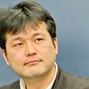
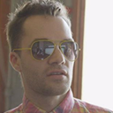
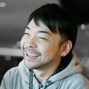
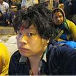

SENSE OF WONDER NIGHT 2013

Screening Committe *Alphabetical Order

-
GREE
Associate Manager
Developer Relations 2 Group 3
Marketing & Developer RelationsShinpei Yashima
Yajima has joined GREE, Inc. in August 2006. Yajima supervised GREE mobile phoneproject, a joint venture with KDDI as project manager. He was taking in charge of GREE avatar service, and GREE in-house product. Yajima is currently serving as consulting and planning of 3rd party apps in GREE platform business.
-
Joju Games
Studio Manager
Juan Gril
Joju Games Founder and Studio Manager Juan Gril has more than 15 years of experience developing casual games. Joju Games produces casual games for international clients including Atari, MTV Networks, and Disney. Juan is the Director of the Indie Showcase at Casual Connect, Advisor for the Free2Play Design and Business Summit at GDC, and an Editor of the IGDA Casual Games White Paper. The former head of Yahoo! Games Studios and a founding member of the team, he thinks video games are the coolest thing ever.
- 
-
Journalist, the Director Emeritus of IGDA Japan
Kiyoshi Shin
Born in 1970, He is Journalist (Video Game / IT) and the Founder and Director Emeritus of International Game Developers Association Japan (IGDA Japan). He is also the lecturer at Ritsumeikan University College of Image Arts and Science. He writes articles to Nikkei newspaper, Famitsu.com, Weekly Agora, and released “The rise and fall of the Game Industry” (Agora Publishing) last June. And the director is Yomune.co that is the support site for eBook self-publishing.
- 
-
Necrosoft Games
Director
Brandon Sheffield
Brandon Sheffield is director of Oakland, CA-based independent game company Necrosoft Games, and was formerly editor-in-chief of Game Developer magazine and senior contributing editor to www.Gamasutra.com. When not developing his own games, he represents several Asian companies' interests in the U.S., as publisher and creative strategist. He is also an adviser for the Game Developers conference and IGF China.
- 
-
NHN PlayArt
Excective Directer
Kazuaki Baba
Baba joined NHN Japan in 2004 as game server programmer. Since he was responsible for Game Development Division and Game Business Division at the company, Mr. Baba is currently assigned as Executive Officer and Senior Manager for Smartphone Game Production Department. He has developed expertise planning and directing in game development.
- 
-
Shindenken
Circle Representative, Game Planner, Programmer
Isao Kitayama
Kitayama has established Shindenken in 2002. He served Comic Market in 20 times and has addressed Dorkbot, Sense of Wonder Night, and IGDA conference. His works in game development have more than 20 titles including "I will be God of the Forest World", "Genius Scientist Bio Ruru", and "QUALIA". His creation of the game development continues to apply in AI technologies such as artificial life, and celluar automation.
-
UBM Tech Game Network
(Independent Games Festival, Game Developers Conference.)
Simon Carless
Simon is the EVP of UBM Tech’s Game Network, meaning that he manages products such as Game Developers Conference - both the San Francisco mothership and satellite shows in Los Angeles, Germany, and China. He is Chairman Emeritus of the yearly ‘Sundance Festival for games’, the Independent Games Festival, which holds its awards at Game Developers Conference yearly, and co-programs the Independent Games Summit events at 3 of the 4 GDCs. He also devised and co-founded prominent indie game bundle website IndieRoyale.com.